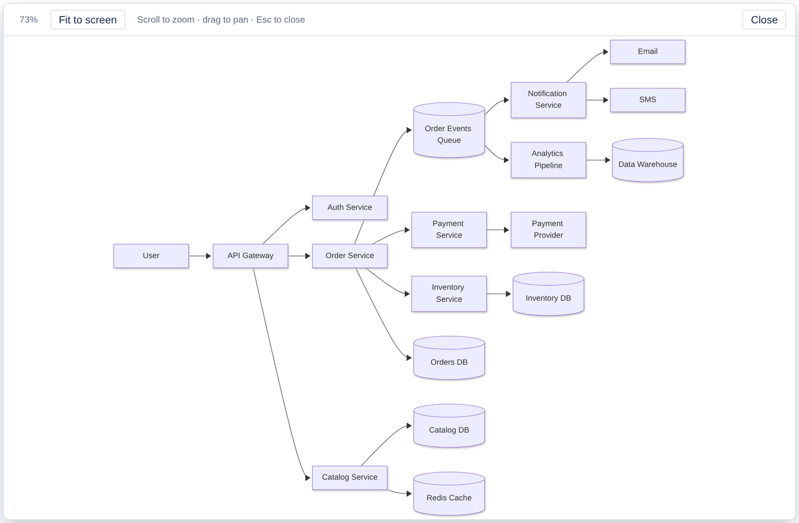

Does Confluence support Mermaid?
Short answer: no. Confluence Cloud doesn't render Mermaid on its own. Paste Mermaid code into a page and you get a code block with the source in it, not a diagram. To see the diagram, add a Mermaid app from the Atlassian Marketplace.
How to add Mermaid diagrams to Confluence Cloud
We built an app for this (free for up to 10 users): Mermaid Diagram Editor for Confluence.
- Install it from the Marketplace.
- On a page, type
/mermaidand insert the macro. - Paste your Mermaid code, or write it in the editor. The diagram renders as you type.
Readers see the rendered diagram and can open it full screen to zoom and pan, so large diagrams stay readable.

Get it free on the Atlassian Marketplace
Can people who don't know Mermaid edit the diagram?
For flowcharts, yes. Double-click a box to rename it, click + to add a step, and the code updates by itself. Other diagram types (sequence, class, ER, Gantt and more) are edited as code with a live preview.
Does my data leave Confluence?
No. The app runs on Atlassian Forge ("Runs on Atlassian"), needs no external account, and the diagram source is stored in the page itself.
Why is my Mermaid diagram not rendering in Confluence?
Usually because it's in a plain code block, which Confluence shows as text. Move the code into a Mermaid macro. If the macro shows an error, check the first line names a diagram type (flowchart TD, sequenceDiagram) and that labels with brackets or quotes are wrapped in double quotes.
Does it work with diagrams written by AI?
Yes. Ask any AI for a Mermaid diagram, paste the code into the macro, and fix any box by clicking it (flowcharts) or in the code.
Get it free on the Atlassian Marketplace
By Schneiderman Tech · Product overview · Flowcharts in Confluence · support@schneiderman.tech